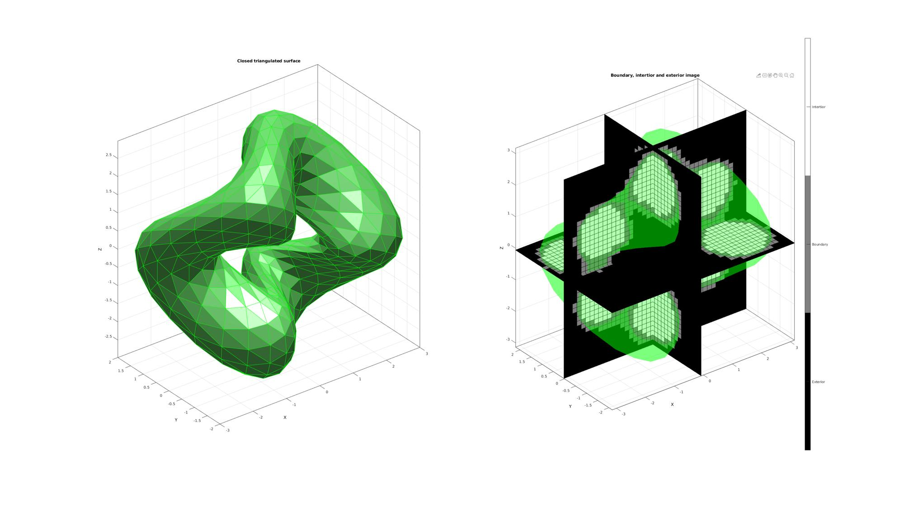
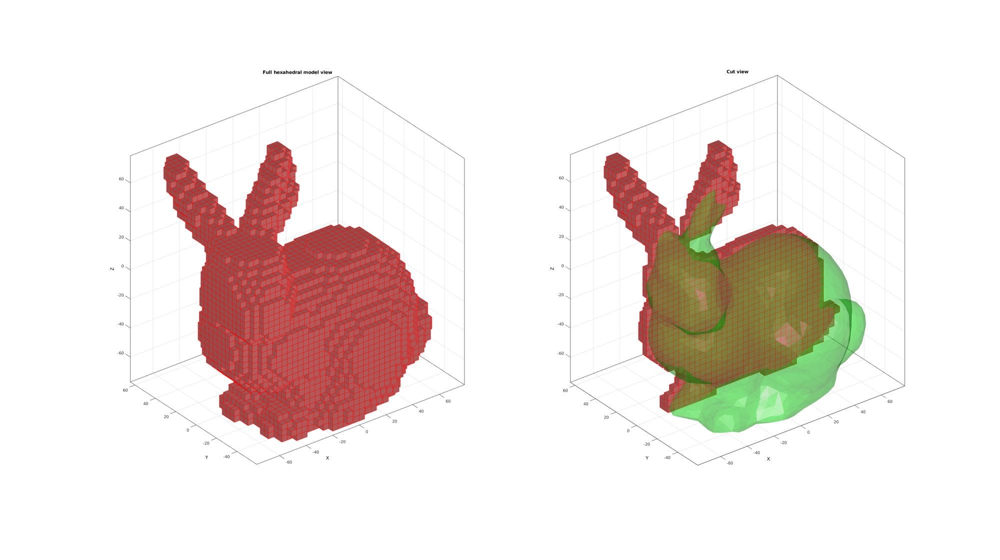
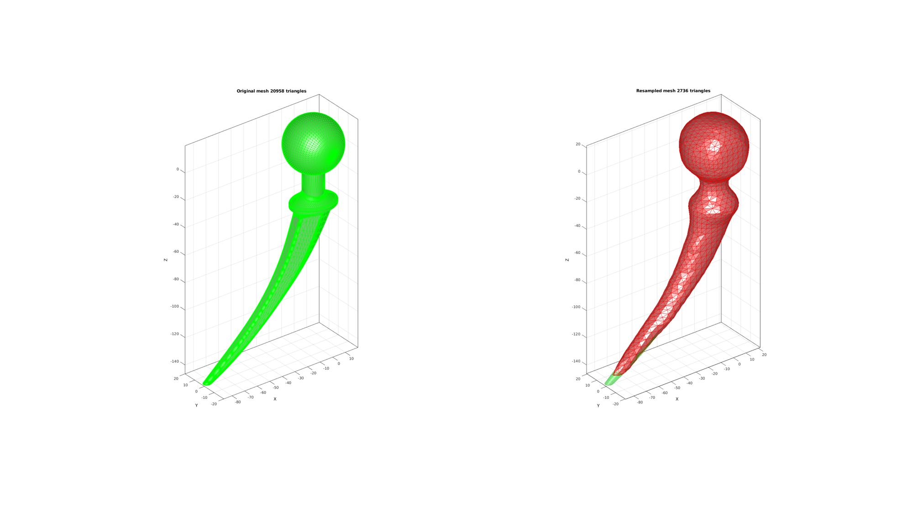

triSurf2Im
Below is a demonstration of the features of the triSurf2Im function
Contents
- Syntax
- Description
- Examples
- EXAMPLE 1: CONVERTING A TRIANGULATED SURFACE TO AN IMAGE WITH DESIRED SIZE, VOXEL SIZE AND ORIGIN
- EXAMPLE 2: CONVERTING A TRIANGULATED SURFACE TO AN IMAGE WITHOUT SPECIFYING DESIRED SIZE, VOXEL SIZE AND ORIGIN
- EXAMPLE 3: Using anisotropic voxels
- EXAMPLE 4: CONVERTING A TRIANGULATED SURFACE MODEL TO A VOXEL BASED HEXAHEDRAL MESH MODEL
- EXAMPLE 5: Using triSurf2Im combined with logic2isosurface to resample a surface
clear; close all; clc;
Syntax
[M,G,bwLabels]=triSurf2Im(F,V,voxelSize,imOrigin,imSiz);
Description
This function converts triangulates surface data to images
Examples
Plot settings
fontSize=10; faceAlpha1=1; faceAlpha2=0.3;
EXAMPLE 1: CONVERTING A TRIANGULATED SURFACE TO AN IMAGE WITH DESIRED SIZE, VOXEL SIZE AND ORIGIN
Defining an example triangulated surface model
% Defining a deformed and rotated torus shape r=1; %Sphere radius rc=2; %Central radius nr=16; nc=30; ptype='tri'; [F,V]=patchTorus(r,nr,rc,nc,ptype); [THETA,RHO] = cart2pol(V(:,1),V(:,2)); V(:,3)=V(:,3)+sin(3*THETA); [R,~]=euler2DCM([0.5*pi 0.5*pi 0.*pi]); V=V*R;
Setting control parameters
% Defining the full set of possible control parameters voxelSize=0.15; % The output image voxel size. imOrigin=min(V,[],1)-voxelSize; imMax=max(V,[],1)+voxelSize; imSiz=round((imMax-imOrigin)/voxelSize); imSiz=imSiz([2 1 3]); %Image size (x, y corresponds to j,i in image coordinates, hence the permutation) % Using |triSurf2Im| function to convert patch data to image data [M,~]=triSurf2Im(F,V,voxelSize,imOrigin,imSiz);
Plotting the results
cFigure; subplot(1,2,1); title('Closed triangulated surface','FontSize',fontSize); hold on; gpatch(F,V,'gw','g',faceAlpha1) camlight('headlight'); lighting flat; axisGeom(gca,fontSize); subplot(1,2,2); title('Boundary, intertior and exterior image','FontSize',fontSize); hold on; gpatch(F,V,'g','none',faceAlpha2); L_plot=false(size(M)); L_plot(:,:,round(size(M,3)/2))=1; [Fm,Vm,Cm]=ind2patch(L_plot,double(M),'sk'); [Vm(:,1),Vm(:,2),Vm(:,3)]=im2cart(Vm(:,2),Vm(:,1),Vm(:,3),voxelSize*ones(1,3)); Vm=Vm+imOrigin(ones(size(Vm,1),1),:); gpatch(Fm,Vm,Cm,'k',faceAlpha1); L_plot=false(size(M));L_plot(round(size(M,1)/2),:,:)=1; [Fm,Vm,Cm]=ind2patch(L_plot,M,'si'); [Vm(:,1),Vm(:,2),Vm(:,3)]=im2cart(Vm(:,2),Vm(:,1),Vm(:,3),voxelSize*ones(1,3)); Vm=Vm+imOrigin(ones(size(Vm,1),1),:); gpatch(Fm,Vm,Cm,'k',faceAlpha1); L_plot=false(size(M));L_plot(:,round(size(M,2)/2),:)=1; [Fm,Vm,Cm]=ind2patch(L_plot,M,'sj'); [Vm(:,1),Vm(:,2),Vm(:,3)]=im2cart(Vm(:,2),Vm(:,1),Vm(:,3),voxelSize*ones(1,3)); Vm=Vm+imOrigin(ones(size(Vm,1),1),:); gpatch(Fm,Vm,Cm,'k',faceAlpha1); colormap(gray(3)); caxis([0 2]); hc=colorbar; set(hc,'YTick',[1/3 1 5/3]); set(hc,'YTickLabel',{'Exterior','Boundary','Intertior'}); axisGeom(gca,fontSize); drawnow;
EXAMPLE 2: CONVERTING A TRIANGULATED SURFACE TO AN IMAGE WITHOUT SPECIFYING DESIRED SIZE, VOXEL SIZE AND ORIGIN
In this example all default settings are used. If the voxel size is not specified it is set equal to the mean edge length of the model. The origin and image sizes then follow to fit the object with an aditional voxel surrounding the model in all directions. The used voxel size and image origin are given in the output G. Note that if inappropriate settings are given then the output boundary, interior and exterior labels may not be appropriate.
% Defining an example triangulated surface model [F,V]=parasaurolophus; % Using |triSurf2Im| function to convert patch data to image data [M,G]=triSurf2Im(F,V); % Retrieve used voxel size and image origin voxelSize=G.voxelSize; %Equal to input if specified imOrigin=G.origin; %Image origin can be used to allign image with surface % size is clearly just size(M) in this case
Plotting the results
hf2=cFigure; subplot(1,2,1); title('Closed triangulated surface','FontSize',fontSize); hold on; gpatch(F,V,'gw','g',faceAlpha1) camlight('headlight'); lighting flat; axisGeom(gca,fontSize); subplot(1,2,2); title('Boundary, intertior and exterior image','FontSize',fontSize); hold on; gpatch(F,V,'g','none',faceAlpha2); L_plot=false(size(M)); L_plot(:,:,round(size(M,3)/2))=1; [Fm,Vm,Cm]=ind2patch(L_plot,double(M),'sk'); [Vm(:,1),Vm(:,2),Vm(:,3)]=im2cart(Vm(:,2),Vm(:,1),Vm(:,3),voxelSize*ones(1,3)); Vm=Vm+imOrigin(ones(size(Vm,1),1),:); gpatch(Fm,Vm,Cm,'k',faceAlpha1); L_plot=false(size(M));L_plot(round(size(M,1)/2),:,:)=1; [Fm,Vm,Cm]=ind2patch(L_plot,M,'si'); [Vm(:,1),Vm(:,2),Vm(:,3)]=im2cart(Vm(:,2),Vm(:,1),Vm(:,3),voxelSize*ones(1,3)); Vm=Vm+imOrigin(ones(size(Vm,1),1),:); gpatch(Fm,Vm,Cm,'k',faceAlpha1); L_plot=false(size(M));L_plot(:,round(size(M,2)/2),:)=1; [Fm,Vm,Cm]=ind2patch(L_plot,M,'sj'); [Vm(:,1),Vm(:,2),Vm(:,3)]=im2cart(Vm(:,2),Vm(:,1),Vm(:,3),voxelSize*ones(1,3)); Vm=Vm+imOrigin(ones(size(Vm,1),1),:); gpatch(Fm,Vm,Cm,'k',faceAlpha1); colormap(gray(3)); caxis([0 2]); hc=colorbar; set(hc,'YTick',[1/3 1 5/3]); set(hc,'YTickLabel',{'Exterior','Boundary','Intertior'}); axisGeom(gca,fontSize); drawnow;

EXAMPLE 3: Using anisotropic voxels
% Simulate image % Defining an example triangulated surface model % Defining a deformed and rotated torus shape r=1; %Sphere radius rc=2; %Central radius nr=16; nc=30; ptype='tri'; [F,V]=patchTorus(r,nr,rc,nc,ptype); [THETA,RHO] = cart2pol(V(:,1),V(:,2));
Setting control parameters
% Defining the full set of possible control parameters voxelSize=[0.075 0.125 0.2]; % The output image voxel size. imOrigin=min(V,[],1)-4*voxelSize([2 1 3]); imMax=max(V,[],1)+4*voxelSize([2 1 3]); imSiz=round((imMax-imOrigin)./voxelSize([2 1 3])); imSiz=imSiz([2 1 3]); %Image size (x, y corresponds to j,i in image coordinates, hence the permutation) % Using |triSurf2Im| function to convert patch data to image data [M,G,bwLabels]=triSurf2Im(F,V,voxelSize,imOrigin,imSiz); %calucalte coordinate in image system Vt=V-imOrigin(ones(size(V,1),1),:);
Plotting the results
cFigure; subplot(1,2,1); title('Closed triangulated surface','FontSize',fontSize); hold on; gpatch(F,V,'gw','g',faceAlpha1) camlight('headlight'); lighting flat; axisGeom(gca,fontSize); subplot(1,2,2); title('Boundary, intertior and exterior image','FontSize',fontSize); hold on; gpatch(F,V,'g','none',faceAlpha2); L_plot=false(size(M)); L_plot(:,:,round(size(M,3)/2))=1; [Fm,Vm,Cm]=ind2patch(L_plot,double(M),'sk'); [Vm(:,1),Vm(:,2),Vm(:,3)]=im2cart(Vm(:,2),Vm(:,1),Vm(:,3),voxelSize); Vm=Vm+imOrigin(ones(size(Vm,1),1),:); gpatch(Fm,Vm,Cm,'k',faceAlpha1); L_plot=false(size(M));L_plot(round(size(M,1)/2),:,:)=1; [Fm,Vm,Cm]=ind2patch(L_plot,M,'si'); [Vm(:,1),Vm(:,2),Vm(:,3)]=im2cart(Vm(:,2),Vm(:,1),Vm(:,3),voxelSize); Vm=Vm+imOrigin(ones(size(Vm,1),1),:); gpatch(Fm,Vm,Cm,'k',faceAlpha1); L_plot=false(size(M));L_plot(:,round(size(M,2)/2),:)=1; [Fm,Vm,Cm]=ind2patch(L_plot,M,'sj'); [Vm(:,1),Vm(:,2),Vm(:,3)]=im2cart(Vm(:,2),Vm(:,1),Vm(:,3),voxelSize); Vm=Vm+imOrigin(ones(size(Vm,1),1),:); gpatch(Fm,Vm,Cm,'k',faceAlpha1); colormap(gray(3)); caxis([0 2]); hc=colorbar; set(hc,'YTick',[1/3 1 5/3]); set(hc,'YTickLabel',{'Exterior','Boundary','Intertior'}); axisGeom(gca,fontSize); drawnow;

EXAMPLE 4: CONVERTING A TRIANGULATED SURFACE MODEL TO A VOXEL BASED HEXAHEDRAL MESH MODEL
This example uses the same model as the previous example. This example demonstrates how the triSurf2Im function in combination with the ind2patch function can be used to convert a triangulated surface into a regular hexahedral meshed model.
[F,V]=stanford_bunny('g'); %Bunny % Convert to image elementSize=4; %Desired hexahedral element size =voxelsize [M,G]=triSurf2Im(F,V,elementSize); % Get geometric parameters of mesh imOrigin=G.origin; %Image origin can be used to allign image with surface % Use ind2patch to create hexahedral mesh L_model=(M>0); %Interior&Boundary choosen here [E_hex,V_hex,C_hex]=im2patch(M,L_model,'h'); % Convert Coordinates [V_hex(:,1),V_hex(:,2),V_hex(:,3)]=im2cart(V_hex(:,2),V_hex(:,1),V_hex(:,3),elementSize*ones(1,3)); V_hex=V_hex+imOrigin(ones(size(V_hex,1),1),:); % Use element2patch to get patch data to plot the model [F_hex,C_hex_F]=element2patch(E_hex,C_hex);
Plotting results
hf3=cFigure; subplot(1,2,1); title('Full hexahedral model view','FontSize',fontSize); hold on; %Pass through unique_patch to reduce "weight" of plot [Fp,Vp,~,~,~,F_count]=unique_patch(F_hex,V_hex,[],5); logicUni=F_count==1; %Logic for boundary faces gpatch(Fp(logicUni,:),Vp,'rw','r',faceAlpha1); axisGeom(gca,fontSize); camlight headlight; subplot(1,2,2); title('Cut view','FontSize',fontSize); hold on; Y=V_hex(:,2); Y_hex=mean(Y(E_hex),2); logicCut=Y_hex>0; %Use element2patch to get patch data to plot the model [F_hex_c,~]=element2patch(E_hex(logicCut,:),[]); %Pass through unique_patch to reduce "weight" of plot [Fp,Vp,~,~,~,F_count]=unique_patch(F_hex_c,V_hex,[],5); logicUni=F_count==1; %Logic for boundary faces gpatch(F,V,'g','none',faceAlpha2); gpatch(Fp,Vp,'rw','r',faceAlpha1); axisGeom(gca,fontSize); camlight headlight; drawnow;
EXAMPLE 5: Using triSurf2Im combined with logic2isosurface to resample a surface
Load surface geometry
defaultFolder = fileparts(fileparts(mfilename('fullpath'))); pathName=fullfile(defaultFolder,'data','STL'); stlName='hip_implant_new.stl'; fileName=fullfile(pathName,stlName); [stlStruct] = import_STL_txt(fileName); F=stlStruct.solidFaces{1}; V=stlStruct.solidVertices{1};
Setting control parameters
% Defining the full set of possible control parameters voxelSize=4; % The output image voxel size. imOrigin=min(V,[],1)-voxelSize; imMax=max(V,[],1)+voxelSize; imSiz=round((imMax-imOrigin)/voxelSize); imSiz=imSiz([2 1 3]); %Image size (x, y corresponds to j,i in image coordinates, hence the permutation) % Using |triSurf2Im| function to convert patch data to image data [M,~]=triSurf2Im(F,V,voxelSize,imOrigin,imSiz);
Plotting the results
cFigure; subplot(1,2,1); title('Closed triangulated surface','FontSize',fontSize); hold on; gpatch(F,V,'gw','g',faceAlpha1) camlight('headlight'); lighting flat; axisGeom(gca,fontSize); subplot(1,2,2); title('Boundary, intertior and exterior image','FontSize',fontSize); hold on; gpatch(F,V,'g','none',faceAlpha2); L_plot=false(size(M)); L_plot(:,:,round(size(M,3)/2))=1; [Fm,Vm,Cm]=ind2patch(L_plot,double(M),'sk'); [Vm(:,1),Vm(:,2),Vm(:,3)]=im2cart(Vm(:,2),Vm(:,1),Vm(:,3),voxelSize*ones(1,3)); Vm=Vm+imOrigin(ones(size(Vm,1),1),:); gpatch(Fm,Vm,Cm,'k',faceAlpha1); L_plot=false(size(M));L_plot(round(size(M,1)/2),:,:)=1; [Fm,Vm,Cm]=ind2patch(L_plot,M,'si'); [Vm(:,1),Vm(:,2),Vm(:,3)]=im2cart(Vm(:,2),Vm(:,1),Vm(:,3),voxelSize*ones(1,3)); Vm=Vm+imOrigin(ones(size(Vm,1),1),:); gpatch(Fm,Vm,Cm,'k',faceAlpha1); L_plot=false(size(M));L_plot(:,round(size(M,2)/2),:)=1; [Fm,Vm,Cm]=ind2patch(L_plot,M,'sj'); [Vm(:,1),Vm(:,2),Vm(:,3)]=im2cart(Vm(:,2),Vm(:,1),Vm(:,3),voxelSize*ones(1,3)); Vm=Vm+imOrigin(ones(size(Vm,1),1),:); gpatch(Fm,Vm,Cm,'k',faceAlpha1); colormap(gray(3)); caxis([0 2]); hc=colorbar; set(hc,'YTick',[1/3 1 5/3]); set(hc,'YTickLabel',{'Exterior','Boundary','Intertior'}); axisGeom(gca,fontSize); drawnow;

Construct iso-surface using logic2isosurface function
L=M>0; controlPar.kernelSize=3; controlPar.contourLevel=0.5; controlPar.voxelSize=voxelSize*ones(1,3); [Fn,Vn]=logic2isosurface(L,controlPar); Vn=Vn+imOrigin(ones(size(Vn,1),1),:);
Smooth surface using patchSmooth function
cPar.Method='HC';
cPar.n=50;
[Vn]=patchSmooth(Fn,Vn,[],cPar);
cFigure; subplot(1,2,1); title(['Original mesh ',num2str(size(F,1)),' triangles'],'fontSize',fontSize); hold on; gpatch(F,V,'gw','g',faceAlpha1) axisGeom(gca,fontSize); camlight('headlight'); lighting flat; subplot(1,2,2); title(['Resampled mesh ',num2str(size(Fn,1)),' triangles'],'fontSize',fontSize); hold on; gpatch(Fn,Vn,'rw','r',faceAlpha1); gpatch(F,V,'g','none',faceAlpha2); axisGeom(gca,fontSize); camlight('headlight'); lighting flat; drawnow;

GIBBON www.gibboncode.org
Kevin Mattheus Moerman, gibbon.toolbox@gmail.com
GIBBON footer text
License: https://github.com/gibbonCode/GIBBON/blob/master/LICENSE
GIBBON: The Geometry and Image-based Bioengineering add-On. A toolbox for image segmentation, image-based modeling, meshing, and finite element analysis.
Copyright (C) 2019 Kevin Mattheus Moerman
This program is free software: you can redistribute it and/or modify it under the terms of the GNU General Public License as published by the Free Software Foundation, either version 3 of the License, or (at your option) any later version.
This program is distributed in the hope that it will be useful, but WITHOUT ANY WARRANTY; without even the implied warranty of MERCHANTABILITY or FITNESS FOR A PARTICULAR PURPOSE. See the GNU General Public License for more details.
You should have received a copy of the GNU General Public License along with this program. If not, see http://www.gnu.org/licenses/.